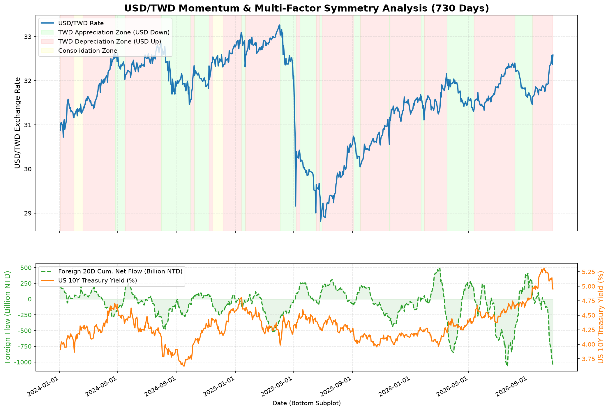

量價效率分析 (VPP)
盤整區高籌碼吸能
盤整段 VPP (1.58億股/點) 為趨勢期約 2.6 倍，代表強烈籌碼換手累積。
波動對稱預估
下跌修正波段中
累計修正 -11.30% (已持續 37 天)，短線 3% 領先燈號出現止跌訊號 (+1.70%)。
反彈低點與建倉策略
深幅修正區 (超跌帶)
跌破歷史中位數 (387.53)，接近左側分批建倉區域，極端防守點 333.34。
完整模型量化分析摘要
最新執行數據
【USD/TWD】【USD/TWD】美元兌新台幣動能效率與多維度對稱模型分析報告
════════════════════════════════════════════════════════════════════════════════
【1. 跨市場與籌碼因子即時監控】
* 外資近 5 日累積淨買賣超: -317.21 十億元新台幣
* 外資近 20 日累積淨買賣超: -1043.08 十億元新台幣
* 美元指數 DXY: 101.80 (近5日變動: -0.18)
* 美元兌韓元 KRW: 1324.20 (近5日變動: -9.23)
* 美國 10 年期公債殖利率: 4.953% (近5日變動: -0.183%)
--------------------------------------------------------------------------------
【2. 歷史波段對稱統計 (台幣貶值波段 (美元兌台幣上漲))】
* 歷史波段數: 37 次
* 平均波動幅度: 2.91% (中位數: 2.15%)
* 平均持續天數: 34.7 天
* 平均波段外資流入: -207.86 十億元
--------------------------------------------------------------------------------
【2. 歷史波段對稱統計 (台幣升值波段 (美元兌台幣下跌))】
* 歷史波段數: 29 次
* 平均波動幅度: 3.51% (中位數: 2.23%)
* 平均持續天數: 38.9 天
* 平均波段外資流入: +58.25 十億元
--------------------------------------------------------------------------------
【3. 當前 USD/TWD 波段評估與等幅對稱投影】
* 當前大波段型態: 上漲
* 波段起始日期: 2026-09-11 (起始匯率: 31.635)
* 波段最高點 (Peak): 32.580
* 波段最低點 (Trough): 31.635
* 當前最新匯率 (2026-10-23): 32.580
* 本波段累計變動: 2.99% (共 +0.945 元)
* 目前已持續交易日: 30 天
* 本波段外資累積淨流入: -1113.63 十億元
[短線動能預警 (0.6% 領先燈號)]
* 短線波段狀態: 台幣短線轉弱 (匯率自低點反彈)
* 短線轉折基準: 2026-10-22 (匯率基準價 32.366)
* 短線累計幅度: +0.66% (1 天)
>>> 【台幣貶值波段對稱投影預估 (以波段最低點計算)】 <<<
* 投影基準點 (本波段最低谷): 31.635
1. 溫和型貶值滿足點 (歷史平均 +2.91%): 【32.555】 (已超越)
2. 標準型貶值滿足點 (歷史中位數 +2.15%): 【32.315】 (已超越)
💡 操作與避險決策建議：
- 台幣貶值已抵達歷史標準貶值滿足區。建議出口商積極在此拋售美元，美債/美股投資人不宜在此擴大追高美元。
════════════════════════════════════════════════════════════════════════════════
美元台幣波段分析明細已儲存至: /data/data/com.termux/files/home/storage/downloads/usdtwd_momentum_backtest.csv
Chart successfully saved to: /data/data/com.termux/files/home/storage/downloads/usdtwd_momentum_analysis.png
最新 USD/TWD 匯率動能分析圖表
最新更新圖檔
